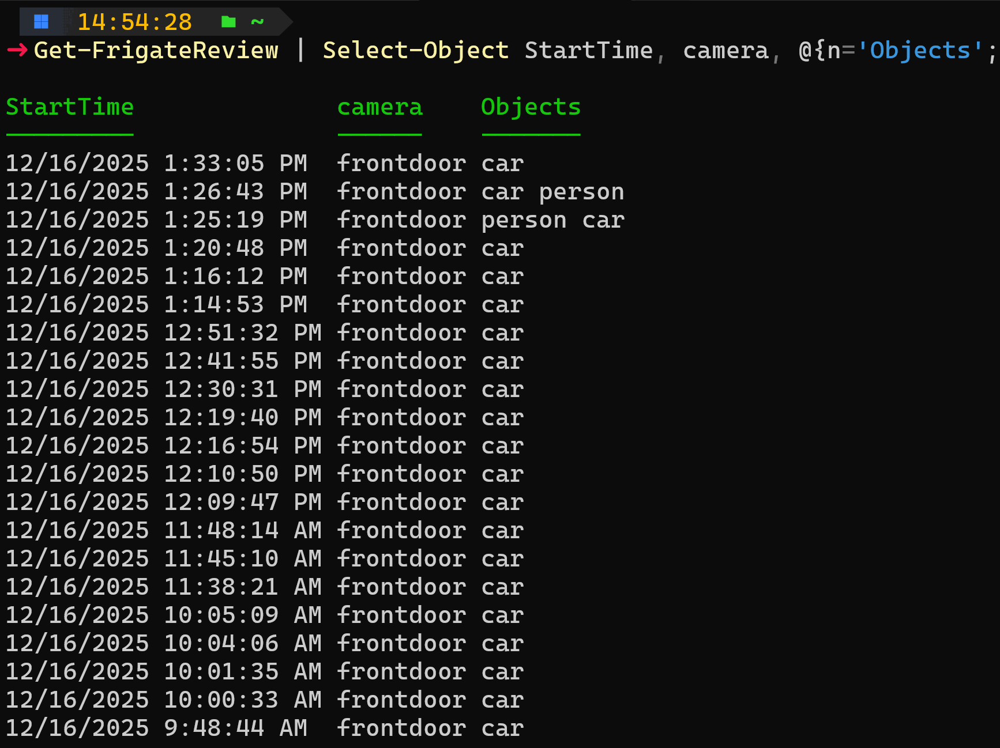

PowerShell module for Frigate
This unofficial Frigate PowerShell module provides convenient cmdlets for working with the Frigate REST API.
Frigate is an open-source MIT-licensed network video recorder application you can run anywhere. It's a popular surveillance tool with homelabbers, integrates nicely with Home Assistant, and uses locally running AI models for object detection.
Learn more at https://frigate.video/

Getting started (for Frigate users)
Prerequisites
- PowerShell 7+ (recommended) or Windows PowerShell (5.1) with TLS 1.2 enabled
- Network access and credentials to a Frigate server.
Install
Login
$cred = Get-Credential -Message 'Frigate credentials'
New-FrigateSession -Uri 'https://frigate.example.local' -Credential $cred
Common tasks
- View configuration:
Get-FrigateConfig - List recent events:
Get-FrigateEvent -After (Get-Date).AddDays(-1) - View users:
Get-FrigateUsers - Create users:
New-FrigateUser -Credential (Get-Credential) -Role admin
Notes for users
- Be cautious when copying command output — configuration and event payloads can include sensitive data including hostnames, IP addresses, and credentials. Redact credentials or identifiable imagery before sharing.
Developer guide (for contributors)
Repository layout
joshooaj.frigate/— module source files.Public/— exported cmdlets (one command per.ps1). Add new public commands here.Private/— internal functions shared by commands.joshooaj.frigate.psm1— module entrypoint. At runtime this file dot-sources every script in Public/ and Private/ and exports public functions.docs/en-US/— generated help pages (platyPS-style). These are packaged into the built module underen-US/.tests/— Pester tests that run against the built module inOutput/....psakeFile.ps1,build.ps1— build and test entrypoints.
Build and test (local)
The project uses psake for the build process, with PowerShell module build tasks
from the PowerShellBuild module. From a PowerShell prompt in the root of the
repo:
# (run once) ensure build tools and dependencies are available
.\build.ps1 -Bootstrap
# Build the module without testing
.\build.ps1 -Task Build
# Build the module and run the tests (the default task is Test)
.\build.ps1
# Same as above
.\build.ps1 -Task Test
Notes about the build
- The build runs
dotnet tool restoreand usesnbgv(dotnet global tool) to determineModuleVersion. Ensure thedotnetCLI is installed as it is required for git-height versioning. - The build outputs a module under
Output/joshooaj.frigate/<version>/which contains the.psm1,.psd1, and the localized help inen-US/. - Tests in
tests/expect environment variablesBHProjectName,BHBuildOutput, andBHProjectPathwhich are set by the build process; prefer running tests viabuild.ps1 -Task Test.
Help and documentation
Command help is generated from two places:
- Comment-based help inside
Public/*.ps1(minimal guidance users see withGet-Help). - Rich topic files under
docs/en-US/— generated/edited with platyPS and packaged into the module during the build.
The build process will use platyps to generate or update the markdown documentation.
You can then fill out the markdown documentation. Try not to use comment-based help
here as, for now, I prefer the markdown files to be the source of truth.
How to add a new command
- Add a new
.ps1file tojoshooaj.frigate/Public/. Keep public cmdlet functions small and focused. - Use
Private/for shared helper functions. - Run
./build.ps1 -Task Testlocally to build, and run tests. - Write, or update the corresponding docs in
docs/en-USas needed.
Tests and quality
- Tests live in
tests/and use Pester. They import the built module fromOutput/...so that tests exercise the packaged module as CI will. tests/Help.tests.ps1validates that each exported command has non-generated help content and at least one example.
Contributing
- Fork the repository and create a branch for your change.
- Add tests that demonstrate the bug or new behavior when possible.
- Run
./build.ps1 -Task Testlocally and ensure tests pass before opening a PR.
Security & privacy
- The module forwards credentials and API requests to the Frigate server; never commit secrets or credentials to the repository. Use
PSCredentialor secure variables when scripting.
Questions or feedback
- Open an issue or PR on the repository describing your request, including reproduction steps and the output of the failing command where relevant.